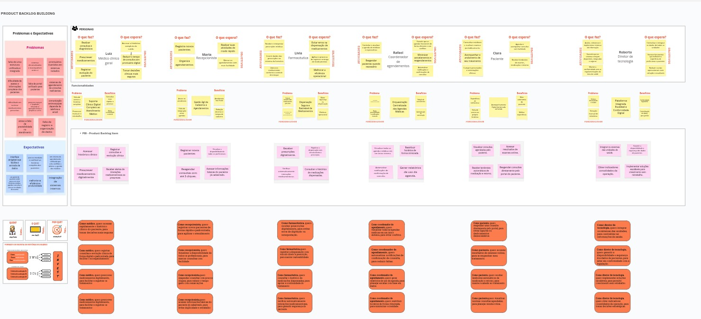

Exercício de construção do backlog usando o Product Backlog Building (PBB)
Utilizamos o Product Backlog Building (PBB) para construir o Product Backlog da HealthNet, uma rede abrangente de clínicas e hospitais distribuídos por diversos estados, que atualmente enfrenta desafios significativos na gestão integrada de seus dados e processos clínicos.

Backlog de Produto
| Nº | História de Usuário | Épico |
|---|---|---|
| US01 | Como doutor, quero acessar rapidamente o histórico clínico do paciente, para tomar decisões mais seguras. | 1. Suporte Clínico Digital Completo ao Atendimento Médico |
| US02 | Como doutor, quero registrar consultas e evolução clínica de forma digital e padronizada, para facilitar o acompanhamento. | 1. Suporte Clínico Digital Completo ao Atendimento Médico |
| US03 | Como doutor, quero prescrever medicamentos digitalmente, para facilitar e registrar os tratamentos. | 1. Suporte Clínico Digital Completo ao Atendimento Médico |
| US04 | Como doutor, quero receber alertas de interações medicamentosas ao prescrever, para evitar riscos ao paciente. | 1. Suporte Clínico Digital Completo ao Atendimento Médico |
| US05 | Como recepcionista, quero registrar novos pacientes de forma rápida e padronizada, para agilizar o atendimento. | 2. Gestão Ágil de Cadastros e Agendamentos |
| US06 | Como recepcionista, quero visualizar a disponibilidade de todos os profissionais, para marcar consultas com facilidade. | 2. Gestão Ágil de Cadastros e Agendamentos |
| US07 | Como recepcionista, quero reagendar consultas com poucos cliques, para reduzir o tempo gasto com remarcações. | 2. Gestão Ágil de Cadastros e Agendamentos |
| US08 | Como recepcionista, quero acessar informações básicas do paciente já cadastrado, para evitar duplicidade e retrabalho. | 2. Gestão Ágil de Cadastros e Agendamentos |
| US09 | Como farmacêutica, quero receber prescrições digitalmente, para evitar erros de digitação ou interpretação. | 3. Dispensação Segura e Rastreável de Medicamentos |
| US10 | Como farmacêutica, quero registrar a dispensação com vínculo direto à prescrição, para manter rastreabilidade. | 3. Dispensação Segura e Rastreável de Medicamentos |
| US11 | Como farmacêutica, quero verificar automaticamente interações medicamentosas, para garantir segurança do paciente. | 3. Dispensação Segura e Rastreável de Medicamentos |
| US12 | Como farmacêutica, quero consultar o histórico de medicações dispensadas, para apoiar a continuidade do tratamento. | 3. Dispensação Segura e Rastreável de Medicamentos |
| US13 | Como coordenador de agendamentos, quero visualizar todas as agendas médicas em um único sistema, para evitar conflitos. | 4. Orquestração Centralizada das Agendas Médicas |
| US14 | Como coordenador de agendamentos, quero reatribuir horários de forma otimizada, para minimizar ociosidade. | 4. Orquestração Centralizada das Agendas Médicas |
| US15 | Como coordenador de agendamentos, quero automatizar notificações de confirmação de consulta, para reduzir faltas. | 4. Orquestração Centralizada das Agendas Médicas |
| US16 | Como coordenador de agendamentos, quero gerar relatórios de uso da agenda, para planejar escalas com base em dados. | 4. Orquestração Centralizada das Agendas Médicas |
| US17 | Como paciente, quero visualizar minhas consultas agendadas, para planejar minha rotina. | 5. Acompanhamento Digital da Jornada de Saúde |
| US18 | Como paciente, quero acessar resultados de exames online, para acompanhar meu tratamento. | 5. Acompanhamento Digital da Jornada de Saúde |
| US19 | Como paciente, quero receber lembretes automáticos de medicação e retorno, para manter a adesão ao tratamento. | 5. Acompanhamento Digital da Jornada de Saúde |
| US20 | Como paciente, quero reagendar uma consulta diretamente pelo portal, para evitar ligações ou deslocamentos desnecessários. | 5. Acompanhamento Digital da Jornada de Saúde |
| US21 | Como diretor de tecnologia, quero integrar os sistemas das unidades, para centralizar as informações de saúde. | 6. Plataforma Integrada, Escalável e Conformidade Digital |
| US22 | Como diretor de tecnologia, quero garantir a disponibilidade e segurança dos dados de pacientes, para estar em conformidade com a legislação. | 6. Plataforma Integrada, Escalável e Conformidade Digital |
| US23 | Como diretor de tecnologia, quero obter indicadores consolidados da operação, para tomar decisões estratégicas. | 6. Plataforma Integrada, Escalável e Conformidade Digital |
| US24 | Como diretor de tecnologia, quero implementar soluções escaláveis, para permitir crescimento sem retrabalho. | 6. Plataforma Integrada, Escalável e Conformidade Digital |
Priorização dos PBI's
Após a definição dos PBIs, realizamos a priorização utilizando o método COORG, que combina a frequência de uso e o valor de negócio de cada item. Os PBIs mais prioritários foram posicionados no topo do backlog, enquanto os de menor prioridade ficaram na base.
Critérios de Priorização
Frequência de Uso Refere-se à regularidade com que o PBI é utilizado pelos usuários.
Escala de valores:
- Hora a hora (5): utilizado várias vezes ao dia.
- Diário (4): utilizado ao menos uma vez por dia.
- Semanal (3): utilizado uma a três vezes por semana.
- Mensal (2): utilizado uma ou poucas vezes ao mês.
- Trimestral (1): utilizado, pelo menos, uma vez a cada três meses.
Valor de Negócio Indica o impacto que o PBI gera para o negócio quando é utilizado.
Escala de valores:
- Alto (3): essencial e de alto impacto para os objetivos do negócio.
- Médio (2): relevante, mas com impacto intermediário.
- Baixo (1): útil, mas com impacto limitado no contexto atual.
Prioridade final = Frequência de Uso + Valor de Negócio
Priorização das Histórias de Usuários
1. Suporte Clínico Digital Completo ao Atendimento Médico
- Acessar histórico clínico do paciente: 5 + 3 = 8 (US01)
- Registrar consultas e evolução clínica: 4 + 2 = 6 (US02)
- Prescrever medicamentos digitalmente: 5 + 3 = 8 (US03)
- Alertas de interações medicamentosas: 5 + 3 = 8 (US04)
2. Gestão Ágil de Cadastros e Agendamentos
- Registrar novos pacientes: 5 + 2 = 7 (US05)
- Visualizar disponibilidade de profissionais: 5 + 2 = 7 (US06)
- Reagendar consultas com poucos cliques: 4 + 2 = 6 (US07)
- Acessar informações básicas do paciente: 4 + 2 = 6 (US08)
3. Dispensação Segura e Rastreável de Medicamentos
- Receber prescrições digitalmente: 5 + 3 = 8 (US09)
- Registrar dispensação vinculada à prescrição: 5 + 3 = 8 (US10)
- Verificar interações medicamentosas: 4 + 2 = 6 (US11)
- Consultar histórico de medicações: 3 + 2 = 5 (US12)
4. Orquestração Centralizada das Agendas Médicas
- Visualizar agendas médicas unificadas: 4 + 3 = 7 (US13)
- Reatribuir horários de forma otimizada: 3 + 3 = 6 (US14)
- Notificações automáticas de consultas: 4 + 2 = 6 (US15)
- Gerar relatórios de uso da agenda: 2 + 3 = 5 (US16)
5. Acompanhamento Digital da Jornada de Saúde
- Visualizar consultas agendadas: 4 + 3 = 7 (US17)
- Acessar resultados de exames: 3 + 3 = 6 (US18)
- Receber lembretes de medicação e retorno: 3 + 3 = 6 (US19)
- Reagendar consulta pelo portal: 3 + 2 = 5 (US20)
6. Plataforma Integrada, Escalável e Conformidade Digital
- Integrar sistemas das unidades: 2 + 3 = 5 (US21)
- Garantir segurança e conformidade: 3 + 3 = 6 (US22)
- Obter indicadores operacionais: 2 + 3 = 5 (US23)
- Implementar soluções escaláveis: 2 + 2 = 4 (US24)
Critérios de aceitação
| Nº | História de Usuário | Critérios de Aceitação |
|---|---|---|
| US01 | Como doutor, quero acessar rapidamente o histórico clínico do paciente, para tomar decisões seguras. | - Exibir histórico clínico completo de forma cronológica (dados demográficos, histórico de doenças, alergias, medicações, exames, laudos, diagnósticos, procedimentos, evolução clínica) - Permitir filtros por tipo de atendimento, data e profissional - Garantir acesso apenas a profissionais autenticados (o sistema deve exigir login e senha, com diferentes níveis de permissão e registrar todas as tentativas de acesso e ações realizadas) |
| US02 | Como doutor, quero registrar consultas e evolução clínica de forma digital e padronizada. | - Oferecer campo estruturado e campo livre para anotação - Associar anotação ao prontuário com data e CRM - Permitir edição dentro de tempo limitado por segurança: a edição será permitida por um período de até 24 horas após o registro inicial, garantindo a integridade e rastreabilidade das informações |
| US03 | Como doutor, quero prescrever medicamentos digitalmente, para facilitar e registrar os tratamentos. | - Permitir prescrição via lista padronizada: o sistema deve oferecer uma base de dados de medicamentos pré-cadastrados, com dosagens e formas de apresentação padronizadas - Registrar data, CRM e assinatura digital - Integrar com prontuário e farmácia |
| US04 | Como doutor, quero receber alertas de interações medicamentosas ao prescrever. | - Verificar interações automaticamente - Exibir alerta com detalhes e sugestão - Bloquear envio até confirmação do profissional |
| US05 | Como recepcionista, quero registrar novos pacientes de forma rápida e padronizada. | - Validar CPF, nome completo e outros dados obrigatórios como data de nascimento, sexo, endereço completo, telefone de contato e e-mail - Exibir alerta de duplicidade - Salvar cadastro com confirmação |
| US06 | Como recepcionista, quero visualizar a disponibilidade de todos os profissionais. | - Exibir agenda semanal/diária por profissional - Permitir filtro por especialidade e unidade - Indicar bloqueios e horários indisponíveis |
| US07 | Como recepcionista, quero reagendar consultas com poucos cliques. | - Selecionar nova data e cancelar a anterior - Reenviar comprovante atualizado por e-mail - Registrar histórico de reagendamentos |
| US08 | Como recepcionista, quero acessar informações básicas do paciente já cadastrado. | - Exibir nome, data de nascimento, CPF, última visita e unidade - Mostrar alertas de atualização cadastral - Bloquear edição sem permissão |
| US09 | Como farmacêutica, quero receber prescrições digitalmente, para evitar erros de digitação ou interpretação. | - Exibir prescrições com assinatura digital, CRM e nome do médico - Validar campos obrigatórios: nome do paciente, medicamento e dosagem - Permitir visualização agrupada por paciente ou data |
| US10 | Como farmacêutica, quero registrar a dispensação com vínculo direto à prescrição. | - Registrar data, hora, profissional e item entregue - Vincular à prescrição correspondente - Atualizar estoque automaticamente |
| US11 | Como farmacêutica, quero verificar automaticamente interações medicamentosas. | - Integrar com base de interações medicamentosas - Exibir alerta e impedir dispensação sem confirmação - Registrar decisão do farmacêutico |
| US12 | Como farmacêutica, quero consultar o histórico de medicações dispensadas. | - Listar por paciente: medicamento, data de prescrição e entrega - Permitir filtro por período ou especialidade - Exportar em PDF ou Excel |
| US13 | Como coordenador de agendamentos, quero visualizar todas as agendas médicas em um único sistema. | - Exibir agendas por unidade ou especialidade - Indicar conflitos com alertas visuais (cores ou ícones de alerta em horários sobrepostos ou médicos agendados em duas unidades no mesmo horário) - Permitir navegação por dia/semana/mês |
| US14 | Como coordenador de agendamentos, quero reatribuir horários de forma otimizada |
BDD
Foram construídos os cenários para os critérios de aceitação das 12 histórias de usuário mais prioritárias.
US01 – Acessar histórico clínico do paciente
Critério 1: Exibir histórico clínico completo do paciente em ordem cronológica
Cenário 1 (positivo)
Dado que o profissional "Dr. Luiz" está autenticado e acessa o prontuário do paciente "Clara",
Quando ele solicita a visualização do histórico,
Então o sistema deve exibir as informações clínicas (exames, consultas, prescrições, histórico de vacinação) ordenadas cronologicamente.
Critério 2: Permitir filtros por tipo de atendimento, data e profissional
Cenário 2 (positivo)
Dado que o profissional "Dr. Luiz" está na tela de histórico do paciente "Clara",
Quando ele aplica um filtro por tipo de atendimento "Consulta" e intervalo de datas "01/01/2024 a 31/12/2024",
Então o sistema deve exibir apenas os registros de consulta correspondentes.
Critério 3: Acesso restrito a profissionais autorizados
Cenário 3 (negativo)
Dado que um usuário "Maria" sem perfil de profissional tenta acessar o histórico do paciente "Clara",
Quando ela realiza a tentativa,
Então o sistema deve exibir "Acesso negado".
US03 – Prescrever medicamentos digitalmente
Critério 1: Prescrição por lista padronizada
Cenário 1 (positivo)
Dado que o médico "Dr. Luiz" está autenticado,
Quando ele acessa a prescrição do paciente "Clara" e seleciona o medicamento "Amoxicilina 500mg" da lista,
Então o medicamento deve ser adicionado à prescrição.
Critério 2: Salvar prescrição com CRM, data e assinatura digital
Cenário 2 (positivo)
Dado que o médico "Dr. Luiz" conclui o preenchimento da prescrição para "Clara",
Quando ele clica em "Finalizar",
Então o sistema deve salvar a prescrição com o CRM "12345-SP", data "13/07/2025" e assinatura digital do "Dr. Luiz".
Critério 3: Integração com prontuário e farmácia
Cenário 3 (positivo)
Dado que a prescrição de "Amoxicilina 500mg" para "Clara" é salva pelo "Dr. Luiz",
Quando a farmacêutica "Lívia" acessa a ficha do paciente "Clara" na farmácia,
Então a prescrição deve estar visível para dispensar.
US04 – Alertas de interações medicamentosas
Critério 1: Verificação automática de interações
Cenário 1 (positivo)
Dado que o médico "Dr. Luiz" adiciona os medicamentos "Amoxicilina 500mg" e "Alopurinol" com interação conhecida para o paciente "Clara",
Quando ele tenta finalizar a prescrição,
Então o sistema deve exibir o alerta de interação medicamentosa.
Critério 2: Alerta com descrição do risco e alternativa
Cenário 2 (positivo)
Dado o alerta de interação entre "Amoxicilina 500mg" e "Alopurinol" para o paciente "Clara",
Quando ele é exibido,
Então deve incluir a descrição do risco "Aumento do risco de reações cutâneas" e sugestão de alternativa "Substituir Alopurinol por Febuxostate".
Critério 3: Prescrição bloqueada até confirmação
Cenário 3 (negativo)
Dado que o médico "Dr. Luiz" ignora o alerta de interação medicamentosa para o paciente "Clara",
Quando ele tenta salvar a prescrição sem confirmar a ciência do risco,
Então o sistema deve impedir o envio da prescrição.
US05 – Registrar novos pacientes
Critério 1: Validação de CPF, nome e dados obrigatórios
Cenário 1 (positivo)
Dado que a recepcionista "Maria" preenche todos os campos obrigatórios no cadastro de novo paciente,
Quando ela clica em salvar,
Então o sistema deve aceitar o cadastro.
Critério 2: Alerta de duplicidade
Cenário 2 (negativo)
Dado que um CPF "123.456.789-00" já existe no sistema,
Quando a recepcionista "Maria" tenta salvar um novo paciente com o mesmo CPF,
Então o sistema deve exibir "Paciente já cadastrado".
Critério 3: Confirmação de sucesso
Cenário 3 (positivo)
Dado que todos os dados do paciente foram aceitos,
Quando o cadastro é concluído,
Então o sistema deve mostrar a mensagem "Cadastro realizado com sucesso".
US06 – Visualizar disponibilidade de profissionais
Critério 1: Exibir agenda semanal/diária
Cenário 1 (positivo)
Dado que a recepcionista "Maria" acessa a agenda do profissional "Dr. Luiz",
Quando ela seleciona o filtro semanal,
Então o sistema deve exibir os horários disponíveis da semana.
Critério 2: Filtrar por especialidade e unidade
Cenário 2 (positivo)
Dado que a recepcionista está na tela de agendamento,
Quando ela filtra por especialidade "Pediatria" e unidade "Hospital Central",
Então apenas os médicos da pediatria nessa unidade devem ser exibidos.
Critério 3: Indicar bloqueios
Cenário 3 (positivo)
Dado que o profissional "Dr. Luiz" tem bloqueios cadastrados (ex: "Almoço" das 12:00 às 13:00),
Quando a agenda é carregada,
Então os horários bloqueados devem aparecer como indisponíveis.
US09 – Receber prescrições digitalmente
Critério 1: Exibir prescrições com assinatura digital, CRM e nome do médico
Cenário 1 (positivo)
Dado que a farmacêutica "Lívia" acessa o sistema,
Quando ela abre a prescrição de "Amoxicilina 500mg" para "Clara",
Então o sistema deve exibir o nome do médico "Dr. Luiz", CRM "12345-SP" e a assinatura digital do "Dr. Luiz".
Critério 2: Validar campos obrigatórios da prescrição
Cenário 2 (negativo)
Dado que uma prescrição para "Clara" não contém todos os campos obrigatórios (ex: dosagem do medicamento),
Quando a farmacêutica "Lívia" tenta visualizar,
Então o sistema deve exibir a mensagem "Prescrição incompleta".
Critério 3: Visualização agrupada por paciente ou data
Cenário 3 (positivo)
Dado que a farmacêutica "Lívia" deseja consultar prescrições,
Quando ela aplica filtro por paciente "Clara",
Então o sistema deve listar apenas as prescrições de "Clara", organizadas por data.
US10 – Registrar dispensação com vínculo à prescrição
Critério 1: Registrar data, hora, profissional e item entregue
Cenário 1 (positivo)
Dado que a farmacêutica "Lívia" entrega o medicamento "Amoxicilina 500mg" para "Clara",
Quando ela confirma a dispensação,
Então o sistema deve salvar a data "13/07/2025", hora "10:30", nome do profissional "Lívia" e o item entregue "Amoxicilina 500mg".
Critério 2: Vincular entrega à prescrição correspondente
Cenário 2 (positivo)
Dado que a dispensação de "Amoxicilina 500mg" está sendo realizada a partir da prescrição do "Dr. Luiz" para "Clara",
Quando a entrega é registrada pela farmacêutica "Lívia",
Então o vínculo com a prescrição correspondente deve ser automático.
Critério 3: Atualizar estoque automaticamente
Cenário 3 (positivo)
Dado que o medicamento "Amoxicilina 500mg" foi entregue pela farmacêutica "Lívia" para "Clara",
Quando a ação for registrada,
Então o sistema deve dar baixa de "1" unidade de "Amoxicilina 500mg" no estoque.
US13 – Visualizar agendas médicas unificadas
Critério 1: Exibir agendas por unidade ou especialidade
Cenário 1 (positivo)
Dado que o coordenador de agendamentos "Rafael" seleciona a unidade "Hospital Central",
Quando ele abre a tela de agendas,
Então o sistema deve listar todos os horários disponíveis por especialidade para o "Hospital Central".
Critério 2: Indicar conflitos de horário com alerta visual
Cenário 2 (positivo)
Dado que dois agendamentos estão sobrepostos (ex: "Dr. Luiz" e "Dr. Pedro" na mesma sala às 10:00),
Quando o coordenador de agendamentos "Rafael" os visualiza,
Então o sistema deve destacá-los em vermelho com ícone de alerta.
Critério 3: Permitir navegação por dia/semana/mês
Cenário 3 (positivo)
Dado que o coordenador de agendamentos "Rafael" acessa o calendário,
Quando ele clica em "semana",
Então o sistema deve exibir a visualização semanal da agenda.
US15 – Notificações automáticas de consultas
Critério 1: Enviar confirmações com antecedência por e-mail/SMS
Cenário 1 (positivo)
Dado que uma consulta para "Clara" com "Dr. Luiz" está marcada para amanhã às 10:00,
Quando o horário de envio de notificação (ex: 24 horas antes) chega,
Então o sistema deve disparar a notificação por SMS ou e-mail para "Clara".
Critério 2: Registrar envio e status da notificação
Cenário 2 (positivo)
Dado que a notificação para "Clara" foi enviada,
Quando o sistema processa a entrega,
Então o status "Entregue" deve ser registrado corretamente no histórico da notificação.
Critério 3: Permitir desativação por preferência do paciente
Cenário 3 (positivo)
Dado que o paciente "Clara" desativou notificações,
Quando uma consulta é marcada para ela,
Então o sistema não deve enviar lembretes ou confirmações para "Clara".
US17 – Visualizar consultas agendadas
Critério 1: Exibir consultas na tela inicial do portal
Cenário 1 (positivo)
Dado que "Clara" está logada no portal,
Quando ela acessa a página inicial,
Então o sistema deve exibir as consultas agendadas para "Clara" (ex: "Consulta com Dr. Luiz em 15/07/2025 às 10:00").
Critério 2: Atualização automática após reagendamento
Cenário 2 (positivo)
Dado que uma consulta de "Clara" foi reagendada,
Quando ela acessa a página de consultas,
Então a nova data e hora devem estar refletidas corretamente.
Critério 3: Permitir adicionar ao calendário pessoal
Cenário 3 (positivo)
Dado que "Clara" vê uma consulta na tela,
Quando ela clica em "Adicionar ao calendário",
Então o sistema deve exportar o evento no formato compatível com calendários pessoais (ex: .ics).
US18 – Acessar resultados de exames
Critério 1: Listar exames por data, tipo e status
Cenário 1 (positivo)
Dado que "Clara" acessa o portal,
Quando ela entra na seção de exames,
Então o sistema deve listar os exames com tipo (ex: "Hemograma"), data (ex: "10/07/2025") e status (ex: "Disponível").
Critério 2: Permitir download em PDF
Cenário 2 (positivo)
Dado que o exame "Hemograma" de "Clara" está disponível,
Quando "Clara" clica em "Download",
Então o sistema deve baixar o arquivo em PDF do resultado do exame.
Critério 3: Notificar paciente quando exame for publicado
Cenário 3 (positivo)
Dado que um exame "Hemograma" de "Clara" foi liberado,
Quando o sistema atualiza o status,
Então uma notificação deve ser enviada por e-mail para "Clara" informando a disponibilidade do resultado.
US22 – Garantir segurança e conformidade
Critério 1: Armazenar dados criptografados com backup automático
Cenário 1 (positivo)
Dado que o prontuário do paciente "Clara" foi atualizado com novas informações clínicas,
Quando o sistema salva as alterações,
Então os dados devem ser criptografados e o backup registrado automaticamente.
Critério 2: Controle de acesso por perfil de usuário
Cenário 2 (positivo)
Dado que a usuária "Maria" (recepcionista) tenta acessar dados administrativos,
Quando ela realiza a tentativa,
Então o sistema deve negar acesso e registrar a tentativa indevida.
Critério 3: Relatórios de acesso e alteração
Cenário 3 (positivo)
Dado que o diretor de tecnologia "Roberto" acessa o módulo de auditoria,
Quando ele solicita um relatório para o período de "01/07/2025 a 13/07/2025",
Então o sistema deve gerar um documento com logs de acesso e edições realizadas.